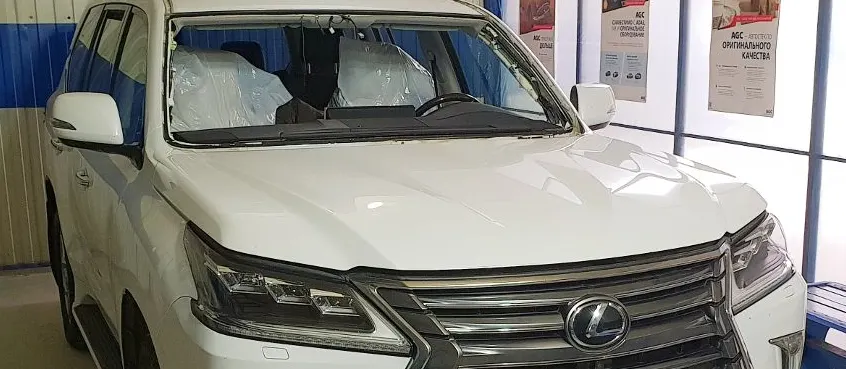
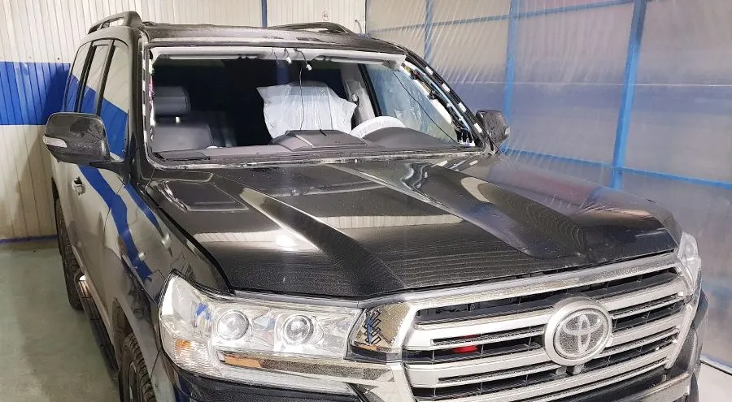
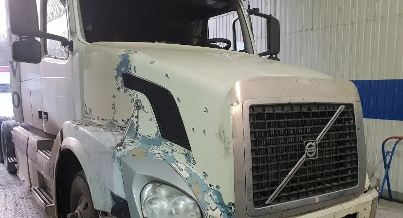
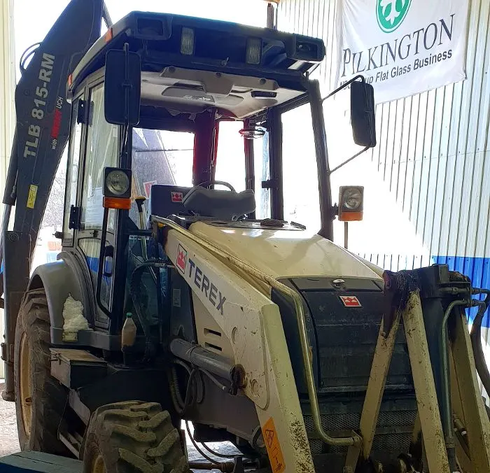

Замена и ремонт автостёкол
Замена автостёкол у Пятигорска: от легковых до спецтехники
Лобовые стёкла на легковые, грузовики и экскаваторы, ремонт сколов. Мастер сначала смотрит стекло и называет цену.
- Лобовые стёкла на иномарки и отечественные
- Ремонт сколов на лобовом стекле
- Стёкла для грузовиков и спецтехники

Цены на лобовые стёкла
Цены с карточки на Яндекс.Картах. Точную сумму для вашей машины назовёт мастер до начала работы.
Лобовые стёкла
- Ford Focus 2обогрев, датчик дождя10 500 ₽
- Ford Focus 3обогрев, датчик дождя12 900 ₽
- Toyota Camry V, 2011 и новее9 990 ₽
Другие работы
- Ремонт сколапо запросу
- Стекло для другой маркипо запросу
- Стекло для грузовика или спецтехникипо запросу
Цены на карточке давно не обновлялись: перед работой мастер назовёт актуальную стоимость.
Как проходит замена
- 01
Выбираете время
Форма выше: услуга, день и время. Дальше звонок на номер сервиса.
- 02
Мастер смотрит стекло
Осматривает скол или трещину и называет стоимость.
- 03
Работа на ваших глазах
Мастер показывает и рассказывает, что делает, как пишут клиенты.
- 04
Забираете машину
Сервис работает с понедельника по субботу, с 9:00 до 16:00.



Что видно по отзывам
Нужное стекло находится
Клиент пишет, что стекло на редкую Toyota Alphard было в наличии.
Берутся за нестандартное
Стекло на экскаватор тоже сделали, не отказали.
Цена называется заранее
Мастер посмотрел скол, озвучил стоимость и только потом начал.
Аккуратная работа
Клиенты отмечают быстрый и качественный результат.
Отзывы с Яндекс.Карт
«Ставил лобовое стекло на Тойоту Альфард. Отличный сервис, стекло было в наличии, что на мой автомобиль редкость. Быстро , качественно, недорого. Буду обращаться еще и советовать друзьям. Рекомендую!»
Инкогнито 8733 · 15 мая 2025
«Отличный мастер!!! Прилетел камешек от КАМАЗа, получился заметный скол на лобовом стекле, по пути заехала без предварительных записей и звонков,Антон посмотрел, озвучил стоимость( очень адекватную) , в процессе работы все показал и рассказал. Очень аккуратно и качественно сделал свою работу! Рекомендую!!!»
Оксана · 29 сентября
«Обратился в с нестандартным стеклом на экскаватор, не отказали в исполнении работы. Ребята четко отработали Ценник комфортный Быстро, качественно Рекомендую всем эту компанию.»
Искандер М. · 15 октября
Отзывы с карточки на Яндекс.Картах, без правок.
Частые вопросы
Сколько стоит замена лобового стекла?
На карточке указаны Ford Focus 2 и 3 и Toyota Camry V: от 9 990 до 12 900 ₽. Для других марок цену называет мастер.
Нужна ли запись?
Выберите время в форме и позвоните. В отзывах клиентка заехала по пути без записи, но так надёжнее.
Делаете грузовики и спецтехнику?
В отзывах и на фото есть грузовики и экскаватор. Название модели лучше назвать по телефону.
Когда работает сервис?
С понедельника по субботу с 9:00 до 16:00, воскресенье выходной.
Запишитесь на замену или ремонт стекла
- Адрес
- хутор Хорошевский, Шоссейная ул., 1А, Предгорный округ
- Часы
- пн–сб 9:00–16:00, воскресенье выходной
- Телефон
- +7 (906) 468-51-91